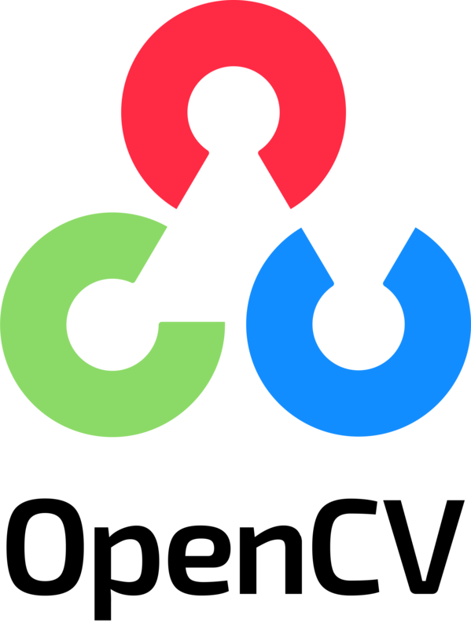
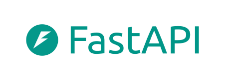

Aplicação de IA na otimização adaptativa de semáforos inteligentes
O TraffIQ monitora o cruzamento por câmeras e utiliza inteligência artificial para definir o momento de abrir e fechar cada sinal, com o objetivo de reduzir o tempo de espera dos veículos, priorizar ambulâncias e garantir a travessia de pedestres.
Simulação de um cruzamento real de São Paulo, com o TraffIQ decidindo somente com base nas imagens das câmeras. Tempos de espera comparados com o semáforo de tempo fixo; ambulâncias: média dos cenários com e sem pedestres.
Como funciona
Da imagem da câmera à decisão do semáforo
Captura das imagens
Três câmeras, uma em cada via de acesso ao cruzamento, registram os veículos que se aproximam do semáforo.
Detecção e rastreamento
A visão computacional identifica cada veículo na imagem e acompanha seu deslocamento, estimando, por faixa, quantos veículos chegam, quantos estão parados e há quanto tempo.
Decisão do sinal
A cada 5 segundos, a IA decide entre manter o verde ou transferi-lo para a outra via. O modelo foi treinado em milhares de situações simuladas, e o amarelo e os tempos mínimos de segurança são sempre respeitados.
Prioridade e travessia
As ambulâncias informam sua aproximação e também são reconhecidas pelas câmeras, recebendo o verde. A cada ciclo, há uma fase exclusiva para a travessia de pedestres.
Da rua para o simulador
Por que as imagens exibidas vêm de um ambiente virtual
Medição
O tráfego de um cruzamento real de São Paulo foi medido em vídeos de drone: volume de veículos por hora em cada via e seus destinos.
Simulação
Um simulador de tráfego reproduz esse movimento veículo a veículo, o que permite testar o semáforo em diversas situações sem interferir no trânsito real.
Ambiente 3D
Um motor gráfico reproduz o cruzamento em 3D e gera as imagens das câmeras. A IA recebe apenas essas imagens, como receberia de câmeras reais.
Como o TraffIQ evoluiu
Cada versão acrescentou uma funcionalidade ao semáforo
Semáforo de tempo fixo
Modelo adotado na maioria dos cruzamentos: cerca de 40 segundos de verde para cada via, independentemente da demanda. É a referência para a comparação dos resultados.
Controle por câmera
As câmeras contam os veículos e uma regra fixa define a troca: o sinal muda quando a fila da outra via é maior.
Primeira versão com IA
O primeiro modelo de IA passou a trocar o sinal sempre no tempo mínimo, independentemente do tráfego. O resultado orientou a definição das informações que o modelo precisava receber.
IA com informações por faixa
O modelo passa a receber, para cada faixa, o número de veículos, os veículos parados e o tempo de espera. O tempo de espera dos veículos é 67% menor que no tempo fixo, em cenário sem pedestres.
Prioridade para ambulâncias
A ambulância informa sua aproximação ao semáforo, e as câmeras passam a reconhecê-la. O sinal abre para a via dela, e todas as ambulâncias com aviso de aproximação atravessam sem parar.
Fase exclusiva para pedestres
A cada ciclo, todos os veículos param para a travessia de pedestres. Ainda assim, o tempo de espera dos veículos é 32% menor que no tempo fixo.
Tecnologias
Ferramentas utilizadas no desenvolvimento do TraffIQ





Ao vivo
Selecione o cenário e acompanhe o TraffIQ no controle do cruzamento
Os retângulos indicam os veículos detectados pela IA; a contagem de veículos parados é feita pela câmera. Clique em uma câmera para ampliá-la.
Indicadores fornecidos pelo simulador, apenas para acompanhamento. A IA não tem acesso a eles: decide com base nas imagens das câmeras e, no caso das ambulâncias, no aviso de aproximação.
Resultados da demonstração
Indicadores medidos pelo simulador desde o início da demonstração